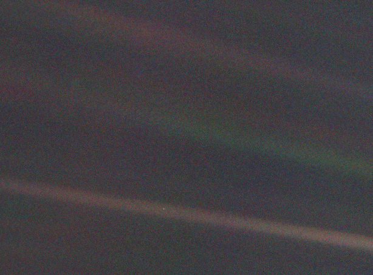

Qianhang Ding 丁乾航 To Understand To Find

Pale Blue Dot: Earth is a bright pixel when photographed from Voyager 16 billion kilometers out (beyond Pluto).
We succeeded in taking that picture [from deep space], and, if you look at it, you see a dot. That's here. That's home. That's us. On it, everyone you ever heard of, every human being who ever lived, lived out their lives. The aggregate of all our joys and sufferings, thousands of confident religions, ideologies and economic doctrines, every hunter and forager, every hero and coward, every creator and destroyer of civilizations, every king and peasant, every young couple in love, every hopeful child, every mother and father, every inventor and explorer, every teacher of morals, every corrupt politician, every superstar, every supreme leader, every saint and sinner in the history of our species, lived there on a mote of dust, suspended in a sunbeam. — Carl Sagan